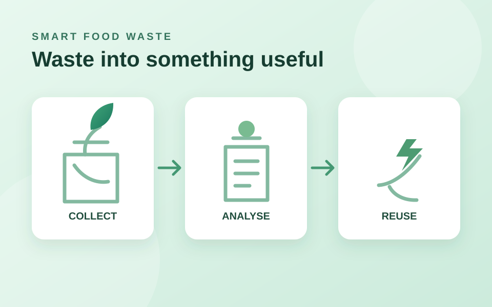

IoT-Based Smart Food Waste Management
A proposed sensor-enabled system to monitor food waste and guide it toward suitable outcomes: food donation, animal feed, biogas, or organic fertilizer. The research explores cloud monitoring and data-driven decision support.
IoTCloudML conceptSustainability